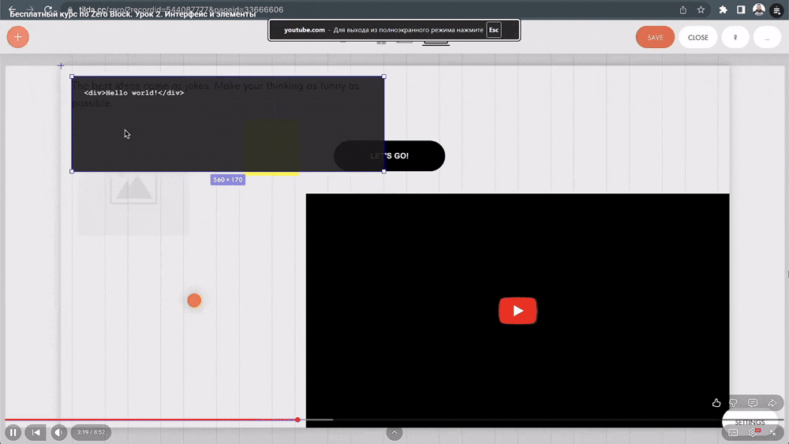

С помощью чего можно создать сайт?
Готовые конструкторы



CMS

Ручная разработка

| Критерий | Готовые шаблоны | CMS | Ручная вёрстка |
|---|---|---|---|
| Сроки запуска | Несколько часов — 2 дня | 1–4 недели | От 1 месяца и больше |
| Уникальность дизайна | Низкая | Средняя | Высокая |
| Сложность внесения изменений | Просто / Сложно | Удобно | Сложно без навыков |
| Навыки для работы | Минимальные | Базовые | Высокие |
| Функциональность | Базовая | Широкая | Любая |
| Производительность | Средняя | Средняя | Высокая |